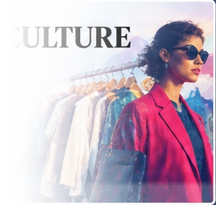

Featured
Headline for the most important economic story
Add a concise factual summary and explain why the story matters.
Read more →Explore controversial topics and different perspectives
across society, technology, and beyond.
People, culture, identity,
and social change.
Money, business,
work and
inequality.
Government, policies,
power and democracy.
Innovation, automation,
privacy and the future.

Trends, identity,
beauty, consumerism
and culture.
Money, business, work, markets, and economic debates shaping the United States.
Add a concise factual summary and explain why the story matters.
Read more →Short factual summary of the development.
Short factual summary of the development.
Short factual summary of the development.
Short factual summary of the development.
Short factual summary of the development.
Government, elections, policies, institutions, power, and political debates in the United States.
Add a neutral factual summary with the relevant date and source.
Read more →Short factual summary of the development.
Short factual summary of the development.
Short factual summary of the development.
Short factual summary of the development.
Short factual summary of the development.
Artificial intelligence, automation, privacy, technology companies, and the future.
Add a concise factual summary of the latest technology development.
Read more →Short factual summary of the development.
Short factual summary of the development.
Short factual summary of the development.
Short factual summary of the development.
Short factual summary of the development.
Trends, identity, beauty, consumerism, sustainability, and culture surrounding fashion.
Add a concise factual summary of the latest fashion and culture development.
Read more →Short factual summary of the development.
Short factual summary of the development.
Short factual summary of the development.
Short factual summary of the development.
Short factual summary of the development.
Social
The latest stories, debates, and changes shaping American society.
Headline for the most important social story
Add a short, factual summary of the story here. Keep it concise and give readers enough context to decide whether they want to read the full article.
Another important social story
A developing story affecting American society
Social culture story headline goes here
Short factual summary of the latest development.
Immigration-related story headline goes here
Short factual summary with relevant context.
Education and American society headline
Short factual summary of the development.
Family and relationships story headline
Short factual summary of the development.
Race and identity story headline
Short factual summary of the development.
Gender and society story headline
Short factual summary of the development.
Social media and American society headline
Short factual summary of the development.